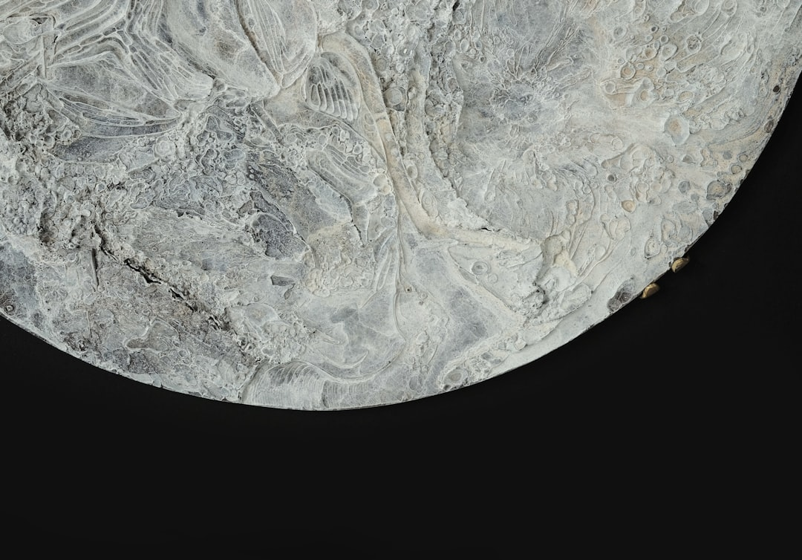

게르마늄 봉쇄 2년, 국내 대체 조달 실제 작동 루트 셋

중국이 2023년 8월 게르마늄 수출통제를 시행한 이후 국제 게르마늄 가격은 규제 전 대비 최대 3배(현물 기준 kg당 약 1,500~1,800달러) 수준을 유지하고 있다. 중국은 전 세계 게르마늄 정제의 70~80%를 담당하며, 한국의 중국산 게르마늄 의존도는 수입량 기준 약 75~80%로 추정된다.
현재 확인된 비중국산 게르마늄 공급원은 세 곳이다. ①벨기에 Umicore(아연 제련 부산물 회수, 연간 생산량 약 30t), ②캐나다 Teck Resources(Red Dog 아연 광산 부산물, 연간 약 5~8t), ③러시아 Germanium & Applications(연간 약 20t, 단 서방 제재 리스크 존재). 이 세 곳의 합계 가용량은 글로벌 수요(연간 약 120~130t)의 40~45%에 불과하다.
한국 내 게르마늄 수요처는 크게 광섬유 제조(GeCl₄ 기반, SK텔레시스·LS전선 공정 연관), 방산 열화상 광학(Ge 단결정, LIG넥스원·한화시스템 연관), 태양전지 기판(소량) 세 분야다. 이 중 방산 광학 분야는 수입 허가 절차와 보안 규정으로 대체 조달 전환 속도가 가장 느리며, 현재 국내 재고는 6~9개월치로 추정된다.
고려아연은 온산 아연 제련 공정에서 게르마늄 부산물을 회수하는 방식으로 2027년 양산을 목표로 하고 있으며, 예상 연간 생산량은 3~5t 수준이다. 이는 국내 수요(연간 추정 8~12t)의 30~40%를 대체할 수 있는 규모다. 나머지 60~70%는 여전히 비중국산 수입 또는 재고 운용에 의존해야 한다.
공급자 시각에서 게르마늄 대체 조달의 가장 큰 장벽은 '물량 부족'이 아니라 '스펙 불일치'다. 방산 열화상 광학에 사용되는 Ge 단결정은 순도 99.999%(5N급) 이상이어야 하며, 이 스펙을 충족하는 비중국산 공급처는 Umicore 단 한 곳에 가깝다. 가격이 맞아도 공급처 다변화가 안 되는 구조적 병목이다.
광통신용 GeCl₄는 상대적으로 대체가 쉽지만 인증 절차가 발목을 잡는다. SK텔레시스·LS전선 등의 광섬유 공정은 공급업체 변경 시 6~12개월의 재인증 사이클이 필요하다. 즉 지금 계약을 바꿔도 실제 생산 라인에 비중국산 GeCl₄가 투입되는 시점은 2026년 중반 이후가 된다—재고 소진 전에 서둘러야 한다.
Umicore(벨기에, 세계 최대 비중국산 게르마늄 정제사)가 가장 직접적 수혜자다. 현재 Umicore의 게르마늄 사업부 매출은 2022년 대비 2024년 약 60~70% 성장했으며, 장기 공급 계약 프리미엄 협상력이 중국 통제 이전과 비교해 역전됐다.
국내에서는 고려아연이 2027년 게르마늄 양산 성공 시 국내 유일 공급자 지위를 확보한다. 방산·광통신 두 분야의 수요처가 동시에 국산 인증을 추진할 경우, 고려아연 게르마늄 사업부의 초기 연매출은 150억~200억 원 수준으로 추산된다(kg당 1,500달러 기준, 연 5t 생산 시).
LIG넥스원·한화시스템 등 방산 광학 수요처는 Ge 단결정 재고 소진 후 대체 조달 경로가 가장 취약하다. 5N급 단결정을 중국 외에서 조달하는 데 드는 추가 비용(가격 프리미엄+인증비용)은 중국산 대비 40~60% 추가 부담으로 추정되며, 이는 방산 계약 단가 재협상 없이는 마진 직격이다.
중소 광섬유 부품 제조사들이 가장 빠르게 피해를 입고 있다. 삼성전자·SK하이닉스 등 대기업은 장기 계약과 재고 여력으로 버티지만, 연간 GeCl₄ 소비량 5t 미만의 중소사는 수입선 전환 협상력이 없어 현물 시장에서 프리미엄 가격을 지불할 수밖에 없다.
방산·광통신 소재 구매담당자라면 지금 즉시 Umicore 코리아 영업팀과 2026~2027년 장기 공급 계약 협상에 착수해야 한다. Umicore의 연간 가용 공급량(약 30t) 중 한국 할당분을 선점하지 못하면 고려아연 양산(2027년) 전까지의 공백을 메울 대안이 없다.
고려아연 협력사 네트워크에 편입하는 것이 2027년 이후의 안정 조달 보험이다. 온산 공장 게르마늄 파일럿 생산 개시(예상 2026년 상반기) 시점에 구매 의향서(LOI)를 제출하는 기업이 초기 납품 우선권을 가져간다. 지금부터 고려아연 소재 사업부와 접촉선을 만들어야 한다.
실제 조달 현장에서는 — 2024년 연말부터 일부 방산 광학 업체들이 러시아산 Ge 단결정을 UAE·터키 경유로 우회 확보하려는 시도가 있었지만, 2025년 들어 대러 제재 강화로 이 루트는 사실상 차단됐다. 남은 선택지는 Umicore 계약 선점이나 고려아연 국산화 편입뿐이다—우회로 찾는 시간을 낭비할 여유가 없다.
이 포스팅은 쿠팡 파트너스 활동의 일환으로 수수료를 제공받습니다.